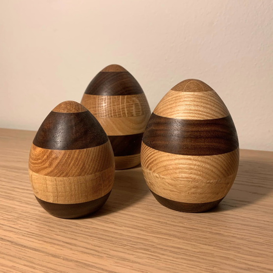
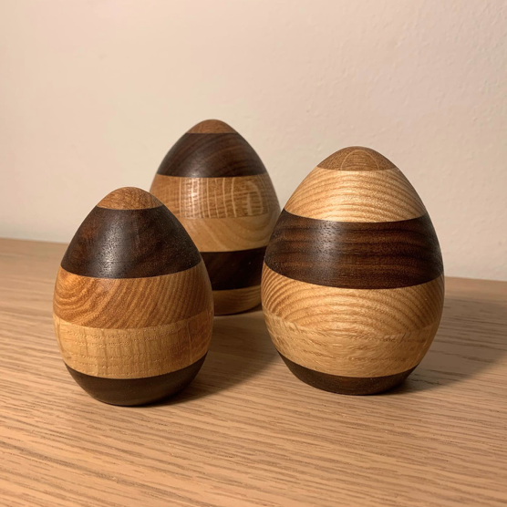

Min vision
Mit mål er, at med god kvalitet og kundekontakt for øje, at blive det næste store navn inden for interiør og design i træ. Som tømrer er jeg tit ude hos kunder og lave småting i deres hjem og dette har gjort, at jeg har totalt forelsket mig i deres reaktioner når jeg ser dem komme hjem og blive begejstret for et arbejde jeg har udført. Den fantastiske oplevelse at folk ønsker at have mine designs stående eller hængende i deres hjem, er en ubeskrivelig følelse og gør at jeg aldrig har lyst til at stoppe med mit arbejde. Søndergaard Design er produktet af min kærlighed til træ og mit inderlige ønske om, at tilføje design perler til folks hjem. Dette giver mig et smil på læben hver evig eneste dag når jeg kommer hjem fra en lang arbejdsdag.
 
